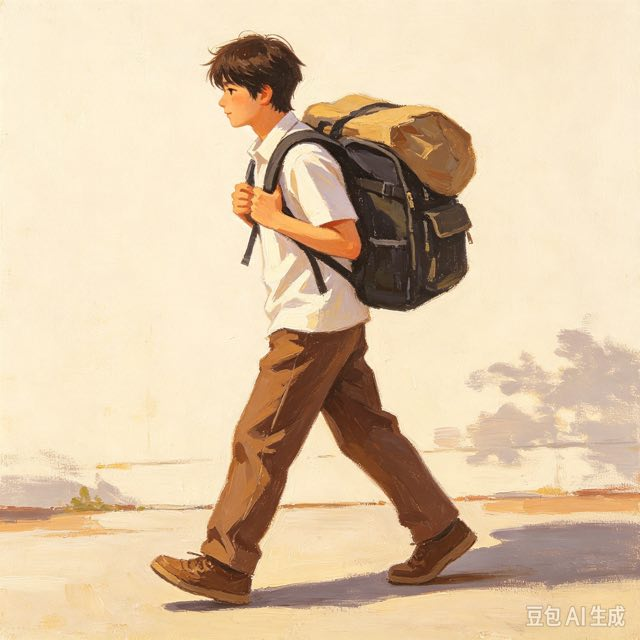
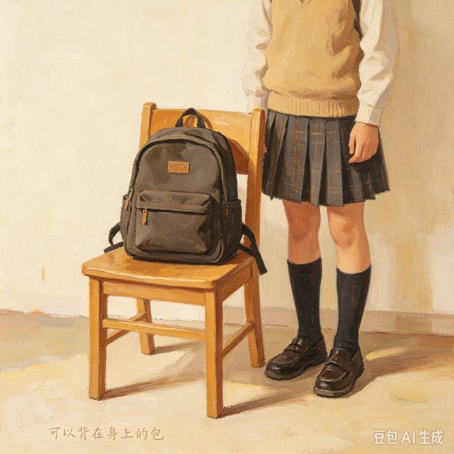
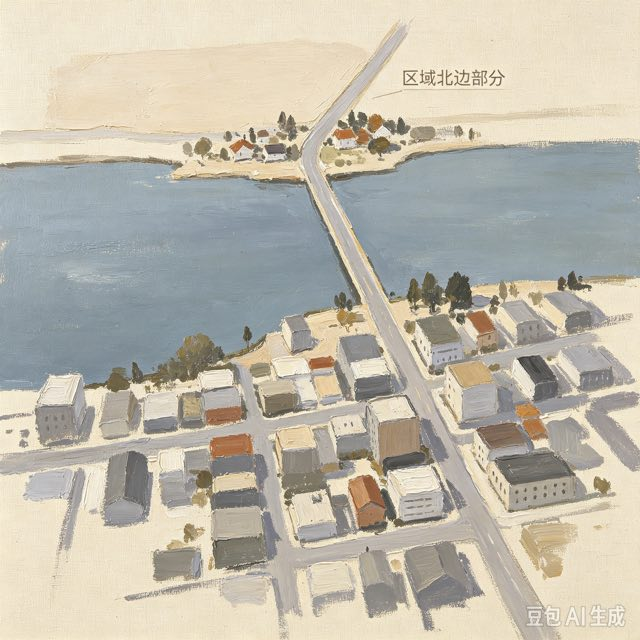
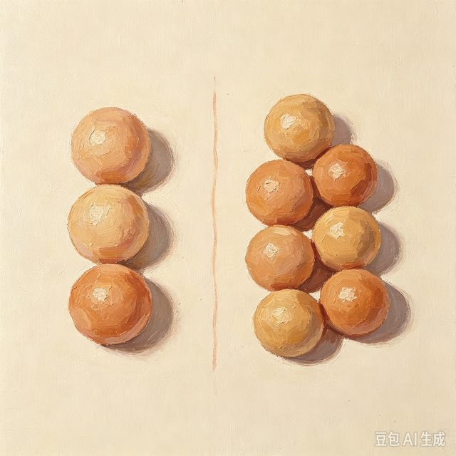
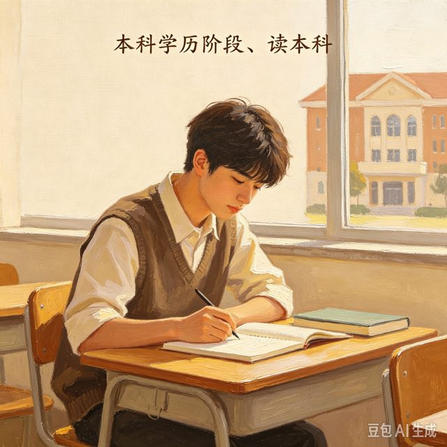
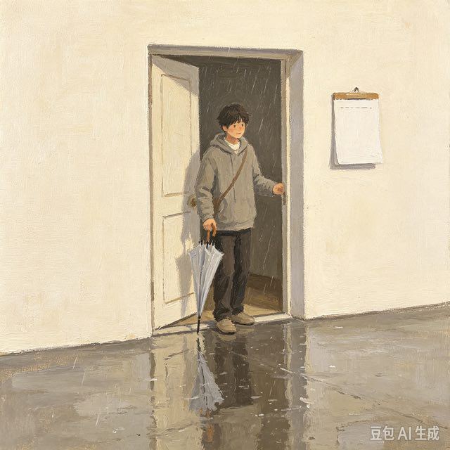
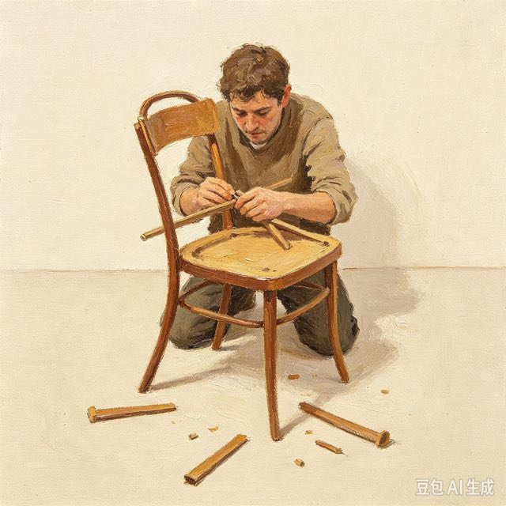
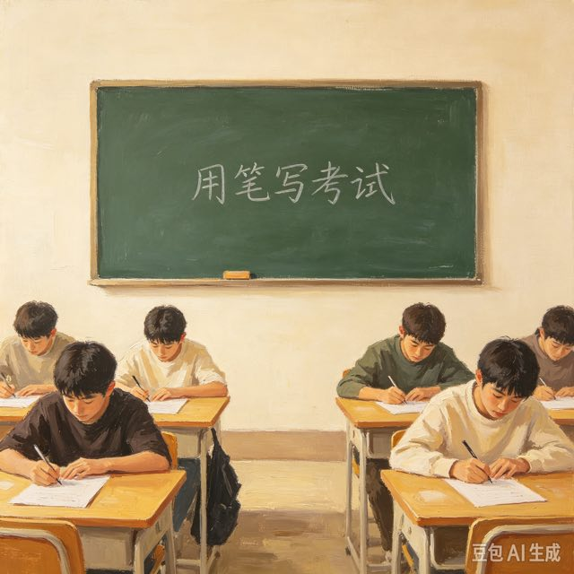

背包、背东西、背孩子
1.我每天背书包去上学。
2.他帮我背很重的箱子。
bēi：用脊背驮东西；另外还有读音bèi（后背），两个读音意思不一样。
①我背着背包去旅行。（）
②我的背bēi很疼。（）
参考答案：①（√） ②（×）
驮

一个背包、旅行背包、背着背包
1.我的背包里有书和水杯。
2.这个黑色背包很好看。
名词，指可以背在身上的包；不要和动词短语“背包”混淆。
①我的背包很重。（）
②我背包很重。（）
参考答案：①（√） ②（×）
书包

城市北部、国家北部、北部地区
1.这个国家的北部冬天很冷。
2.公园的北部有一个湖。
指某个地方靠北的部分；区别“北方”，北部多指一个区域内部北边。
①这座城市北部工厂很多。（）
②我想去北部中国旅游。（）
参考答案：①（√） ②（×）
北方

两倍、三倍、增加一倍
1.我的工资是以前的两倍。
2.这个房间比那个大两倍。
用于数字比较，表示倍数；不能说“一倍大”，要说“大一倍”。
①A的价格是B的三倍。（）
②苹果比橘子一倍贵。（）
参考答案：①（√） ②（×）

本科生、读本科、本科毕业
1.我正在读本科。
2.他是本科毕业生。
大学的一种学历阶段；后面可以加“生”指学生。
①他明年本科毕业。（）
②我打算去本科工作。（）
参考答案：①（√） ②（×）

本来打算、本来就是、本来的样子
1.我本来想去，但是没时间。（副词）
2.这是它本来的颜色。（形容词）
表示原先、原来；经常和“想、打算”搭配，说明原本的计划后来发生改变。
①我本来想出去玩，下雨了。（）
②我本来昨天去买书。（）
参考答案：①（√） ②（×）
原来

很笨、笨手笨脚、太笨
1.我学骑车很笨，总是摔倒。
2.不要说别人笨。
形容不聪明、不灵巧，多用于人或者动作；属于不太礼貌的词，慎用。
①我做这个工作很笨。（）
②这杯咖啡很笨。（）
参考答案：①（√） ②（×）
聪明
大鼻子、小鼻子、鼻子疼
1.他的鼻子很高。
2.我感冒了，鼻子不舒服。
身体器官名词，后缀“子”读轻声zi。
①我的鼻子能闻到味道了。（）
②我有一个鼻。（）
参考答案：①（√） ②（×）

参加笔试、通过笔试、笔试考试
1.明天我们要笔试。
2.笔试之后还有面试。
用笔写的考试，和“面试”相对；可以作名词也可以作动词。
①这次招聘先进行笔试。（）
②我打算笔试一本书。（）
参考答案：①（√） ②（×）
大学毕业、毕业以后、马上毕业
1.我明年大学毕业。
2.毕业以后我想找一份工作。
完成学校的学习；不能说“毕业大学”，要说“从大学毕业 / 大学毕业”。
①我今年夏天毕业。（）
②我打算毕业这所学校。（）
参考答案：①（√） ②（×）
大学毕业生、新毕业生、本科毕业生
1.很多毕业生正在找工作。
2.他是今年的大学毕业生。
名词，指已经毕业的学生。
①这家公司招不少大学毕业生。（）
②我明年做毕业生。（）
参考答案：①（√） ②（×）